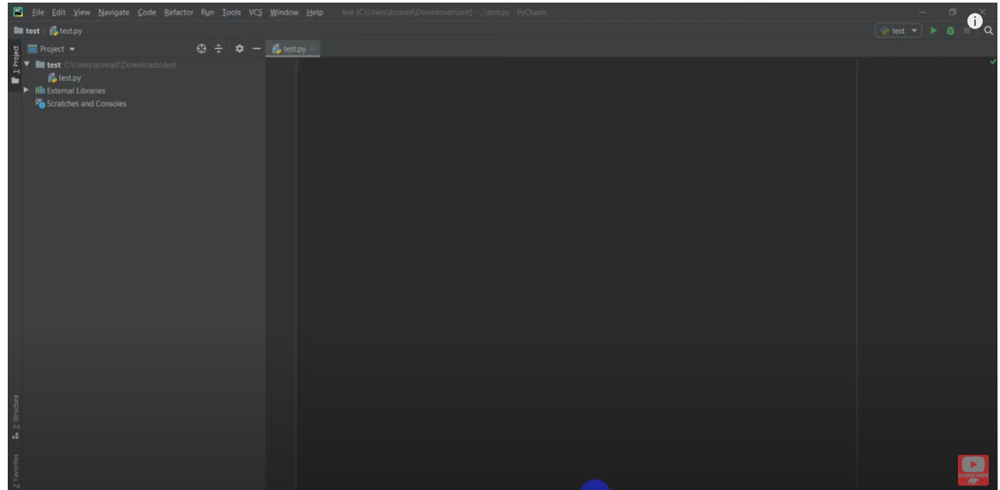

2. Getting Started#
2.1. Overview#
2.2. Python installation: Anaconda Distribution#
2.2.1. Anaconda choice#
I recommend that you install the Anaconda distribution of Python. Anaconda is a Python distribution that includes various scientific computing libraries, packages, and tools for data analysis, machine learning, and scientific computing. It aims to provide a comprehensive and user-friendly platform for Python programming in the scientific and data science communities. An alternative distribution of Python is the Python.org, and it comes with Python Interpreter, IDLE (a little text editing program) and all of the Python Standard Library modules.
Upon acquiring the Anaconda distribution of Python from Anaconda.com, you receive a Python Interpreter, the Anaconda Prompt (a command line utility), Spyder (a code editor), and approximately 600 additional Python modules that are not part of the Python Standard Library. Moreover, the Anaconda distribution encompasses Anaconda Navigator, a convenient program for swiftly launching Jupyter notebooks.
The Anaconda distribution of Python offers a multitude of benefits, including the inclusion of Python itself, alongside approximately 600 additional Python packages that are free to install. These supplementary packages comprise many of the most common tools and libraries used to tackle various programming challenges. Opting for Anaconda over the Python version obtainable from Python.org affords you Python and the Python Standard Library, plus the added 600 modules. With Anaconda, you can circumvent the cumbersome task of installing each of these modules individually.
Furthermore, Anaconda’s versatility is evident in its ability to be installed without administrator privileges. This feature is especially useful in situations where program installation is not feasible, such as in school computer labs. Additionally, Anaconda is compatible with MacOS, where the pre-installed version of Python is often outdated and restricted behind a set of administrator privileges, which may cause installation and run-time issues. By utilizing Anaconda instead, these problems can be averted.
Another advantage of Anaconda is its capability to simplify package management and virtual environments. While these may not seem significant to new Anaconda users, as you progress and begin working on larger projects with multiple dependencies, package management and virtual environments become essential. Anaconda’s inclusion of Conda, a package and environment manager, streamlines the process and makes it significantly more manageable.

2.2.2. How do I install Anaconda?#
To install the Anaconda distribution of Python from Anaconda.com, you can do the following:
Download the Anaconda distribution
Choose the installer file: Select the appropriate installer file for your operating system (Windows, macOS, or Linux). Make sure to download the Python 3.x version of Anaconda, as it is the latest stable release.
Download the installer: Click on the download link for the installer file. The file size may be significant, so it might take some time to complete the download.
Run the installer: Once the download is complete, locate the downloaded .exe file on your computer and double-click on it to run the installer.
Follow the installation wizard: The Anaconda installation wizard will guide you through the installation process. Follow the on-screen instructions to proceed with the installation.
Select the installation options: During the installation, you’ll be prompted to choose the installation location and whether you want to add Anaconda to your system’s PATH environment variable. It is generally recommended to leave the default options selected unless you have specific requirements.
Complete the installation: Once you have selected the installation options, proceed with the installation. It may take a few minutes for the installation process to complete.
Verify the installation: After the installation is finished, you can verify if Anaconda has been successfully installed by opening a new terminal or command prompt window and running the command conda –version. If Anaconda is installed correctly, it will display the version number.
2.2.3. Recommended: PyCharm installation#
PyCharm is an Integrated Development Environment (IDE) specifically designed for Python development. It provides a comprehensive set of tools and features to streamline the coding process, including code completion, debugging, testing, and version control integration. With its user-friendly interface and extensive functionality, PyCharm offers a powerful environment for Python developers to write, debug, and manage their projects efficiently.
Download and install the IDE for community (free) or professional in the JetBrain/PyCharm Once you have it done, you can create a new project, set up your python environment, and start coding! See this guide for more information. 
2.2.4. Other online services with Python#
Google Colab, short for Google Colaboratory, is a cloud-based integrated development environment (IDE) provided by Google for writing and executing Python code. It allows you to create and share Jupyter notebooks, which are interactive documents containing code, visualizations, and explanatory text.
Here are some key features and benefits of using Google Colab for Python code:
Cloud-based: Google Colab runs on Google’s powerful servers, so you don’t need to worry about installing any software or configuring your own development environment. All you need is a web browser and an internet connection.
Free access to resources: Colab provides free access to computing resources, including CPU and GPU, which can be used to run your code. This is particularly useful for computationally intensive tasks, such as machine learning or data analysis.
Collaboration and sharing: Colab allows you to share your notebooks with others, making it easy to collaborate on projects. You can also share the notebooks publicly and view notebooks shared by the community.
Interactive coding environment: Colab notebooks support both code cells and text cells. You can write and execute Python code in code cells, and use text cells to add explanations, documentation, or markdown content. This interactive environment makes it easy to experiment, iterate, and document your code.
Rich ecosystem: Colab provides access to a wide range of Python libraries and frameworks, including popular ones like NumPy, Pandas, TensorFlow, and PyTorch. You can install additional libraries as needed.
Integration with Google Drive: Colab integrates with Google Drive, allowing you to save and load notebooks directly from your Google Drive account. This makes it convenient for managing and organizing your code files.
To use Google Colab, you can follow these steps:
Tip
Google Colab is an online option
Open your web browser and go to the Google Colab website (https://colab.research.google.com/).
Sign in with your Google account if you are not already signed in.
Create a new notebook by clicking on “New Notebook” or open an existing notebook from Google Drive or GitHub.
In the notebook, you can write your Python code in code cells. To execute the code in a cell, click the “Play” button next to the cell or use the keyboard shortcut Shift+Enter.
You can add text, images, and visualizations to your notebook using text cells. Text cells support Markdown syntax for formatting.
If you need to install additional libraries, you can use the !pip install command in a code cell.
Colab provides various options for saving, exporting, and sharing your notebooks. You can save your changes to Google Drive or download the notebook as a Jupyter (.ipynb) file.
Remember that the code and data in Colab notebooks are stored temporarily, and the session can time out after a period of inactivity. However, you can save your work to Google Drive or other storage locations to persist your notebooks for future use.

2.3. Run first code#
To run your first code in the Anaconda Prompt, follow these steps:
Launch Anaconda Prompt: Open the Anaconda Prompt on your system.
you can directly enter the code into the Python interpreter by running the command.
This will start an interactive Python session where you can enter and execute code line by line.